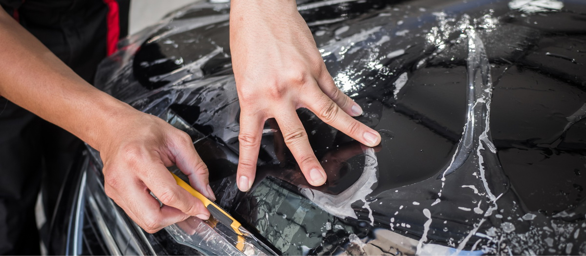

01 / УСЛУГА
Бронирование кузова плёнкой
Quantum Pro и SunTek · другие плёнки по выбору
Для защиты кузова используем полиуретановые плёнки Quantum Pro и SunTek. Они помогают сохранить лакокрасочное покрытие от сколов, царапин, дорожного мусора и насекомых. По желанию заказчика можем подобрать и установить другую плёнку выбранного им бренда — после согласования материала и его характеристик.
от 3 000 ₽